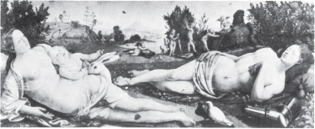
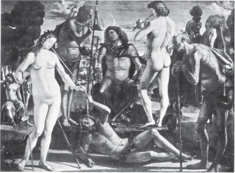
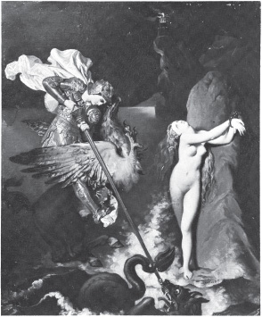
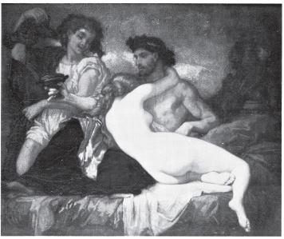
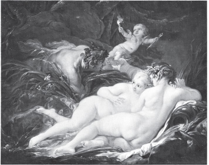
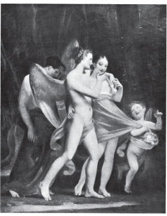

VENUS VE MARS 15. YÜZYIL

PAN 15. YÜZYIL

ANGELICA'YI KURTARAN RUGGIERO, 19. YÜZYIL

BİR ROMA ŞÖLENİ, 19. YÜZYIL

PAN'LA SYRINX, 18. YÜZYIL

SEVGİNİN SAFLIĞI KANDIRIŞI, ZEVKİN ONU ALIP GÖTÜRMESİ, ARKADAN PİŞMANLIĞIN GELİŞİ, 18. YÜZYIL